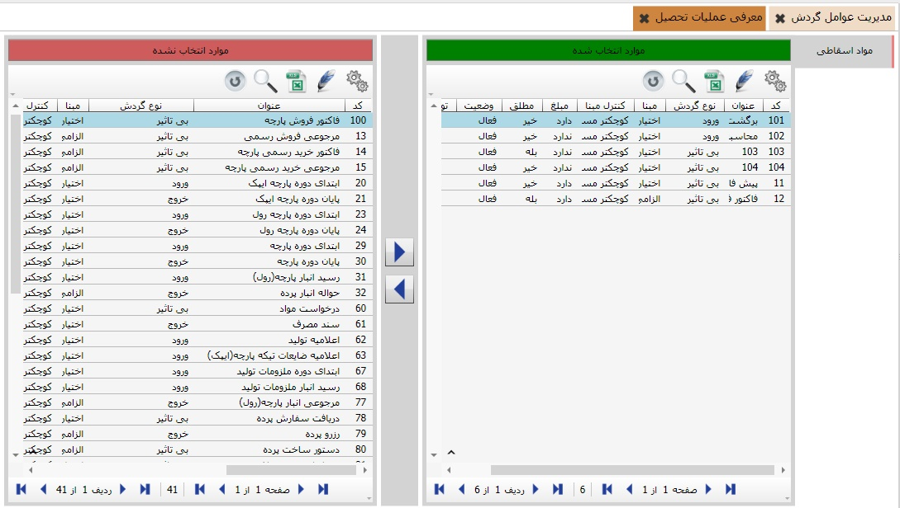

امکان «معرفی عملیات تحصیل» برای کاربران در اتوماسیون دارایی ثابت و اموال پیاده سازی گردیده است. همانطور که در تصویر ذیل مشاهده می کنید،شما می توانید، از طریق دکمه های میانی فرم موردنظر عملیاتهای تصحیل را معرفی نمایید.
لازم به توضیح است، پیش از معرفی عملیات تحصیل ابتدا باید، در بخش «مدیریت عوامل گردش» عوامل موثر در گردش دارایی و اموال را تعیین نمایید. پس از آن به کمک دکمه های میانی امکان معرفی عملیات تحصیل امکانپذیر می باشد.